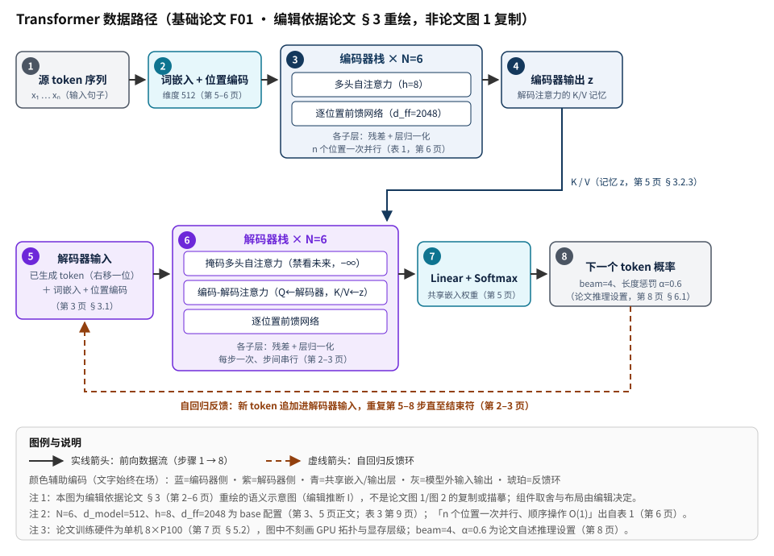

Attention Is All You Need（Transformer）：完全基于注意力的序列转导模型（基础论文 F01）
本页为基础论文 F01，独立于本站 16 篇核心合集（2024–2025 年 GPU/LLM 系统论文）单列发布。全部定量内容取自本地论文 PDF 17_Attention-Is-All-You-Need_1706.03762.pdf（arXiv:1706.03762v7，2023-08-02 修订版），并逐条标注 PDF 页码与章节。本论文是 2017 年的模型结构论文，本身不研究 GPU 服务或训练系统。
快速标签与阅读说明
- 类别：2017 年模型结构论文（非 GPU 系统论文）
- 形态：编码器-解码器序列转导
- 论文实验硬件：单机 8 × NVIDIA P100（训练）
- 核心资源：算力（注意力复杂度 O(n²·d)）
- 证据状态：P + R + E + I
- 收录方式：奠基论文单列，不进入核心 16 篇卡片、筛选、选型矩阵与统计
最后核验日期：（本地 PDF 第 1–10 页经渲染原页逐项目检；第 11–15 页参考文献与注意力可视化图经文本提取交叉核对；仓库与 arXiv 记录在线核验）。
证据完整度：关键定量结论均带 PDF 页码/表号与完整测试条件，未获取的字段一律写明「论文未明确披露」；Tensor2Tensor 仓库经在线核验（R，已归档）；arXiv 版本记录经在线核验（E，仅用于版本核对）；收录判断、工程解读与数字口径分析为编辑推断（I）。本页不设任何评分。
证据标签图例： P＝论文 R＝官方仓库 E＝外部资料 I＝编辑推断
页内目录（13 节，锚点固定）
1. 摘要与一句话判断
| 英文题名 | Attention Is All You Need |
|---|---|
| 中文题名（编辑译）I | 注意力就是你所需的一切（Transformer） |
| 作者与机构 | Ashish Vaswani、Noam Shazeer、Niki Parmar、Jakob Uszkoreit、Llion Jones、Aidan N. Gomez、Łukasz Kaiser、Illia Polosukhin；脚注注明*等同贡献、署名顺序随机；Gomez 入职时属 Google Brain、Polosukhin 入职时属 Google Research P 第 1 页 |
| 会议发表记录 | 31st Conference on Neural Information Processing Systems（NIPS 2017），Long Beach, CA, USA——第 1 页页脚逐字印明 P（NeurIPS 前身沿用 NIPS 名称时期） |
| arXiv 版本记录 | 本地 PDF 左缘水印逐字为 arXiv:1706.03762v7 [cs.CL] 2 Aug 2023，即 arXiv 第 7 版（2023-08-02 修订）。arXiv v7（2023 年修订版）与 NIPS 2017 会议正式版是两条不同的发表记录；本页全部页码均指该 v7 PDF，未与会议正式版逐字比对 P（第 1 页水印） |
| 论文给出的代码 | 第 10 页 §7 逐字给出 https://github.com/tensorflow/tensor2tensor；2026-09-14 核验：可达但已归档（archived，只读），属官方历史实现，不得表述为活跃维护 R（详见 #links） |
| 本地输入 PDF | 17_Attention-Is-All-You-Need_1706.03762.pdf（15 页；本页证据来源，不随站点公开分发） |
3 分钟速读
- 问题：循环模型沿符号位置串行计算，训练时无法在样本内并行；卷积模型（ConvS2S、ByteNet）可并行但跨距离关联所需的操作数仍随距离增长 P（第 1–2 页 §1–2）。
- 方案：Transformer 沿用编码器-解码器整体结构，但完全以注意力构成：编码器与解码器各 N=6 层，每层为多头自注意力＋逐位置前馈网络（解码器另插入对编码器输出的交叉注意力），各子层残差连接后层归一化，d_model=512 P（第 2–3 页 §3、图 1）。
- 为什么可行：自注意力每层复杂度 O(n²·d)、最少顺序操作 O(1)、任意两位置路径长度 O(1)；当 n<d 时每层计算量还低于循环层 P（第 6–7 页 §4 表 1）。
- 结果：WMT 2014 英德 big 28.4 BLEU（超此前最好结果含集成 2.0 以上）；英法建立单模型 SOTA（摘要/表 2 为 41.8；§6.1 为 41.0——差异照录不调和）；训练仅需 8 块 P100 上 12 小时（base）/3.5 天（big）；并迁移到英文成分句法分析（WSJ §23 仅 WSJ 训练 91.3 F1）P（第 1、8–10 页；完整条件见 #experiments）。
- 边界：论文不研究 GPU 服务/训练系统——无吞吐/TTFT/TPOT、无显存管理、无 kernel、无集群内容 P（全篇）＋I（边界归纳）；decoder-only 模型、RoPE、RMSNorm、GQA、FlashAttention、现代 KV-cache 服务等均为论文之后的工作，与本论文无关 I。
| 结论/数字 | 指标定义 | 硬件 | 模型/规模 | 精度 | 批量/并发 | 数据/长度 | 基线 | 论文定位 |
|---|---|---|---|---|---|---|---|---|
| WMT 2014 英德 28.4 BLEU，超此前最好结果（含集成）2.0 以上；base 27.3 亦超所有已发表单模型与集成 | BLEU（newstest2014 测试集，越高越好） | 单机 8 × NVIDIA P100（论文未披露 8 卡间并行/切分方案） | Transformer big（213M 参数，表 3 口径）；base 65M | 论文未明确披露（当时为单精度训练时代，论文未写明数值精度字段） | 每批约 25000 源 token + 25000 目标 token（按近似长度组批） | WMT 2014 英德约 450 万句对，BPE 共享词表约 37000 | 此前已报告最好结果（含 GNMT+RL、ConvS2S、MoE 及各集成） | P 第 1 页摘要；第 8 页表 2、§6.1 |
| WMT 2014 英法单模型 SOTA——摘要/表 2 印 41.8，§6.1 正文印 41.0（同一 PDF 内不一致，照录不调和） | BLEU（newstest2014） | 同上 8 × P100；big 训练 3.5 天 | Transformer big（英法版 dropout=0.1 而非 0.3） | 同上 | 同上 | WMT 2014 英法 3600 万句，32000 word-piece 词表 | 此前已发表单模型（英法 41.0 口径）；此前最好结果（41.8 口径表述为「new single-model state-of-the-art」） | P 第 1 页摘要（41.8）；第 8 页表 2（41.8）；第 8 页 §6.1（41.0） |
| 训练成本：base 3.3×10¹⁸ / big 2.3×10¹⁹ FLOPs（估计）；英法 big 训练成本不足此前 SOTA 的 1/4 | FLOPs 估计 = 训练时间 × GPU 数 × 单精度持续算力（脚注 5 给出各 GPU 假设） | 8 × P100（9.5 TFLOPS/卡假设）等 | base / big | 单精度（脚注 5 口径） | — | — | 表 2 各基线行 | P 第 8 页表 2、§6.1、脚注 5 |
| 英文成分句法分析：WSJ §23 仅 WSJ 训练 91.3 F1；半监督 92.7 F1 | constituency parsing F1（WSJ §23） | 论文未明确披露（§6.3 未给出评测硬件） | 4 层 Transformer、d_model=1024 | 论文未明确披露 | — | WSJ Penn Treebank 约 4 万句（16K 词表）；半监督约 1700 万句（32K 词表） | 除 RNNG 93.3（生成式）外优于所有此前已报告结果；仅 WSJ 训练即超 Berkeley Parser（90.4） | P 第 1、9–10 页 §6.3、表 4 |
2. 问题背景
序列转导的三条既有路线
- 循环（RNN/LSTM/GRU）：沿符号位置串行计算，训练时样本内无法并行；隐状态压缩历史，长程依赖路径长度 O(n) P（第 1–2 页 §1）。
- 卷积（ByteNet、ConvS2S）：可并行计算，但关联任意两个位置所需的操作数随距离增长——ByteNet 为对数、ConvS2S 为线性，远距离依赖学习困难 P（第 2 页 §2）。
- 注意力增强的混合模型：当时表现最好的模型也以注意力连接编码器与解码器，但仍以循环/卷积为主体 P（第 1–2 页 §1–2）。
Transformer 的目标
作者提出一个完全基于注意力、彻底去掉循环与卷积的转导架构，追求：更高的训练并行度（顺序操作最少）、更短的训练时间、任意位置间的常数次操作关联 P（第 2 页 §2）。作者称据其所知，Transformer 是首个完全依赖自注意力的转导模型，以多头注意力抵消注意力平均化带来的有效分辨率下降 P（第 2 页 §2）。引言中给出的量化目标：在 8 块 P100 上训练 12 小时即达到新 SOTA P（第 2 页 §1）。
基线与任务
任务为 WMT 2014 英德与英法翻译（newstest2014 测试集）；基线为此前已报告的单模型与集成结果（GNMT+RL、ConvS2S、ByteNet、MoE、Deep-Att+PosUnk 等，完整数字见 #experiments 表 2 复刻）P（第 8 页表 2）。另有英文成分句法分析迁移实验（WSJ）验证泛化 P（第 9–10 页 §6.3）。
3. 核心机制
整体架构（编码器-解码器，纯注意力堆叠）
- 编码器：N=6 个相同层，每层两个子层——多头自注意力、逐位置全连接前馈网络；每个子层做残差连接后接层归一化：
LayerNorm(x + Sublayer(x))；所有子层与嵌入层输出维度 d_model=512 P（第 3 页 §3.1）。 - 解码器：亦 N=6 层，插入第三个子层——对编码器输出的多头注意力；自注意力加掩码防止位置关注其后继位置；输出嵌入右移一位，保证位置 i 的预测只依赖小于 i 的已知输出（自回归性质）P（第 3 页 §3.1）。
缩放点积注意力与多头注意力
MultiHead(Q, K, V) = Concat(head₁, …, headh) WO，其中 headi = Attention(QWiQ, KWiK, VWiV)
- 缩放的动机：大 dk 时点积幅值增大，把 softmax 推入梯度极小区域；脚注 4 给出 q·k 方差为 dk 的推导，故除以 √dk。点积注意力可用高度优化的矩阵乘法实现，比加性注意力更快更省空间 P（第 4 页 §3.2.1、脚注 4）。
- 多头：对 Q/K/V 各做 h 次不同学习线性投影后并行执行注意力再拼接投影。实验取 h=8、dk=dv=d_model/h=64；各头降维使总计算量与全维单头相近；多头让模型可在不同表示子空间、不同位置联合关注，单头平均会抑制这一点 P（第 4–5 页 §3.2.2）。
- 三种用法：编码器自注意力（全位置互看）；解码器掩码自注意力（把 softmax 输入中非法连接置 −∞，保持自回归）；编码器-解码器注意力（query 来自解码器上一层，key/value 来自编码器输出）P（第 5 页 §3.2.3）。
前馈网络、嵌入与位置编码
- 逐位置 FFN：
FFN(x) = max(0, xW₁+b₁)W₂+b₂，等价两个 1×1 卷积；内层维度 d_ff=2048，参数逐层不同 P（第 5 页 §3.3）。 - 嵌入共享：两个嵌入层与 pre-softmax 线性变换共享同一权重矩阵；嵌入层中权重乘以 √d_model P（第 5 页 §3.4）。
- 正弦位置编码：PE(pos,2i)=sin(pos/10000^(2i/d_model))、PE(pos,2i+1)=cos(同式)，波长从 2π 到 10000·2π 几何级数；作者假设任意固定偏移 k 的 PE(pos+k) 可表示为 PE(pos) 的线性函数，正弦版可能外推到更长序列；学习式位置嵌入结果几乎相同（表 3 行 E）P（第 6 页 §3.5、第 9 页表 3）。
为什么用自注意力（表 1 的三个考量）
| 层类型 | 每层计算复杂度 | 最少顺序操作 | 最大路径长度 |
|---|---|---|---|
| 自注意力 | O(n² · d) | O(1) | O(1) |
| 循环 | O(n · d²) | O(n) | O(n) |
| 卷积 | O(k · n · d²) | O(1) | O(logk(n)) |
| 受限自注意力（邻域 r） | O(r · n · d) | O(1) | O(n/r) |
当序列长度 n 小于表示维度 d 时，自注意力每层计算量低于循环层；可分离卷积复杂度为 O(k·n·d + n·d²)；限制邻域 r 的受限自注意力列为未来工作 P（第 6–7 页 §4）。作者另指出自注意力带来可解释性收益（附录可视化，见 #experiments）P（第 7 页 §4）。
4. GPU/系统数据路径

端到端文字序列（与图中编号一致）
- ① 源输入：源语言 token 序列 x₁…xₙ 进入模型 P（第 2–3 页图 1）。
- ② 嵌入与位置编码：token 映射为 d_model=512 维嵌入并乘 √d_model，逐元素加上正弦位置编码 P（第 5–6 页 §3.4–3.5）。
- ③ 编码器栈：N=6 层，每层多头自注意力（h=8，全位置互看）＋逐位置 FFN（d_ff=2048），各子层残差连接后层归一化；n 个位置一次并行计算（表 1：顺序操作 O(1)）P（第 3、5–6 页 §3.1–3.3；第 6–7 页表 1）。
- ④ 编码器输出 z：最终层输出序列 z 作为「记忆」，供解码器交叉注意力使用（key/value 来自 z）P（第 3、5 页 §3.1、§3.2.3）。
- ⑤ 解码器输入：已生成的输出 token 序列右移一位后做嵌入与位置编码，保证位置 i 只能看到 <i 的输出 P（第 3 页 §3.1）。
- ⑥ 解码器栈：掩码自注意力（非法连接置 −∞）→ 交叉注意力（query 来自解码器、key/value 来自 z）→ 逐位置 FFN，同样残差＋层归一化 P（第 3、5 页 §3.1–3.2.3、§3.3）。
- ⑦ 输出层：pre-softmax 线性变换（与嵌入共享权重）＋softmax 给出下一个 token 的概率分布 P（第 5 页 §3.4）。
- ⑧ 自回归反馈：选出的 token 拼回解码器输入，重复 ⑤–⑦ 直到终止符；推理时按 beam size 4、长度惩罚 α=0.6 解码，最大输出长度=输入长度+50 P（第 3 页 §3.1、第 8 页 §6.1）。
| 数值/事实 | 对象与条件 | 论文定位 |
|---|---|---|
| 512 / 2048 | d_model 与 d_ff（base 配置） | P 第 3、5 页 §3.1、§3.3 |
| 6 / 8 / 64 | 层数 N、注意力头数 h、每头维度 d_k=d_v（base） | P 第 3、4 页 §3.1–3.2.2 |
| 65M / 213M | base / big 参数量（表 3 口径） | P 第 9 页表 3 |
| ≈25000+25000 | 每批源/目标 token 数（按近似长度组批） | P 第 7 页 §5.1 |
| 0.4 秒/步 ×100000 步 ≈ 12 小时 | base 训练，单机 8 × P100 | P 第 7 页 §5.2 |
| 1.0 秒/步 ×300000 步 ≈ 3.5 天 | big 训练，单机 8 × P100 | P 第 7 页 §5.2 |
| O(n²·d) / O(1) | 自注意力每层复杂度 / 顺序操作（表 1） | P 第 6–7 页表 1 |
5. 架构权衡
-
并行度—生成串行
得：训练时自注意力顺序操作 O(1)，全位置可并行，8 卡 12 小时（base）即达 SOTA P（第 2 页 §1、第 6–7 页表 1）。
失：解码仍自回归逐 token 生成；论文未改变这一点，也未讨论推理加速 P（第 3 页 §3.1）＋I（边界归纳）。 -
表达力—计算量
得：任意两位置常数次操作关联，长程依赖易学习；n<d 时每层计算低于循环层 P（第 2、6–7 页）。
失：自注意力每层 O(n²·d)，计算与注意力权重随序列长度平方增长；论文把「局部、受限注意力」列为未来工作 P（第 6–7 页 §4、第 10 页 §7）。 -
多头—单头
得：多头在不同子空间不同位置联合关注；消融中单头（h=1）比最优设置差 0.9 BLEU P（第 4–5 页 §3.2.2；第 9 页表 3 A）。
失：头数过多亦变差（h=32 为 25.4）；各头降维后单头表达能力受限（同表）P（第 9 页表 3）。 -
质量口径—正则强度
得：标签平滑 ε_ls=0.1 提升 BLEU；dropout 明显防过拟合（0.0 → 24.6 BLEU vs 0.1 → 25.8）P（第 7–8 页 §5.4；第 9 页表 3 D）。
失：标签平滑「伤困惑度、提 BLEU」（ε_ls=0.0 时 PPL 4.67 更低）P（第 7–8 页 §5.4；第 9 页表 3 D）。 -
正弦—学习式位置编码
得：正弦版无参数、理论上可能外推到更长序列 P（第 6 页 §3.5）。
失：实际收益未见——学习式位置嵌入结果几乎相同（表 3 行 E：4.92/25.7 vs base 25.8）P（第 9 页表 3）。
6. 云上部署映射
I 本节边界声明：论文不包含任何云部署、实例选型、网络拓扑或编排内容；本页也不引用任何云厂商页面。以下映射全部为编辑推断，说明论文的哪些结论后来成为云上 LLM 平台设计时的机制前提，供架构师建立「论文 ↔ 系统工作」的对应关系；每条都不构成论文自身的结论。
| 论文结论（P） | 云上平台视角的延伸关注（I） | 对应本站核心合集主题 |
|---|---|---|
| 自注意力顺序操作 O(1)，训练全位置并行（表 1） | 大 batch 数据并行与算子级并行在 Transformer 上可行，是现代训练平台吞吐模型的前提之一 | 训练并行与集群（MegaScale、TorchTitan） |
| 解码自回归、每步消费此前输出（§3.1 输出右移） | 推理服务的逐 token 调度、批处理与时延指标（TTFT/TPOT）由此结构而来；论文本身未讨论 | 推理服务与资源调度（DistServe、Sarathi-Serve 等） |
| 每层 O(n²·d) 注意力计算（表 1） | 长上下文下注意力计算/访存成为瓶颈，催生 kernel 与显存管理工作；论文未涉及 | GPU Kernel 与显存（FlashAttention-3、vAttention、FlashInfer） |
| 编码器-解码器结构（本论文形态） | 后续主流 LLM 多采用 decoder-only 等其他形态，属论文之后的发展，不得反向归于本论文 | 合集各篇的模型背景 |
实例/网络/存储/编排等具体云映射：论文未明确披露，本页亦不作猜测——需要云上落地细节时，请直接阅读核心合集对应详情页（其云上映射同样遵循 P/R/E/I 标注）。
7. 成本 / 性能 / SLO
论文实际给出的成本口径
| 指标 | 定义 | 口径/单位 | 出处 |
|---|---|---|---|
| 训练成本（FLOPs 估计） | 训练时间 × GPU 数 × 单精度持续算力 | FLOPs；表 2 中 Transformer base/big 行各印一个横跨英德/英法两列的值：3.3×10¹⁸ 与 2.3×10¹⁹（未按语言分别给出） | P 第 8 页表 2、脚注 5 |
| 单精度持续算力假设 | 脚注 5 给出的各 GPU 持续 TFLOPS 假设 | K80 2.8、K40 3.7、M40 6.0、P100 9.5 TFLOPS | P 第 8 页脚注 5 |
| 训练时长 | base 0.4 秒/步 ×100000 步 ≈ 12 小时；big 1.0 秒/步 ×300000 步 ≈ 3.5 天 | 单机 8 × P100 | P 第 7 页 §5.2 |
| 相对成本结论 | 英法 big 训练成本不足此前 SOTA 的 1/4；摘要称「a small fraction of the training costs of the best models from the literature」 | 相对表 2 各基线行的 FLOPs 估计 | P 第 1、8 页摘要、§6.1 |
| BLEU | 机器翻译质量指标（越高越好），newstest2014 | 表 2 复刻见 #experiments | P 第 8 页表 2 |
| PPL（dev） | 开发集 newstest2013 困惑度，per-wordpiece 口径 | 论文表 3 说明明确不可与 per-word PPL 比较 | P 第 9 页表 3 说明 |
I 数字口径注意（编辑推断）：表 2 的 FLOPs 是按脚注 5 假设的粗估而非计量值；41.8（摘要/表 2）与 41.0（§6.1）的差异在本 PDF 内无任何解释（可能原因如不同检查点/评测轮次或笔误，论文未披露），本页保持两值并存，不做「选出正确值」的合并（见 #evidence I03）。
容量规划变量与明确缺口
- 可从论文复用的容量变量：模型规模（65M/213M 参数）、批 token 预算（25000+25000）、步时与步数（0.4s×100k、1.0s×300k）、GPU 单精度持续算力假设 P（第 7–8 页 §5、脚注 5）。
- 明确缺口：论文无任何推理成本、服务吞吐、时延（TTFT/TPOT）或 SLO 数据——这些是后续推理服务系统论文的对象，不属于本论文 P（全篇无此内容）＋I（边界归纳）。本页不提供参数化云成本公式，以免给出论文之外的伪精确数字 I。
8. 安全与可运维性
| 维度 | 论文事实 | 复现/运维提示（编辑推断） |
|---|---|---|
| 多租户/数据驻留 | 论文不涉及任何多租户、鉴权或数据驻留问题（模型研究论文语境）P（全篇）＝论文未明确披露 | 如将相关模型用于生产服务，租户隔离、数据驻留与残留清理需按服务系统设计另行解决（见核心合集各篇「安全与可运维性」章节） |
| 代码供应链 | 论文第 10 页给出唯一代码链接 tensor2tensor；该仓库 2026-09-14 核验为 archived=true（只读归档）、Apache-2.0、最后 push 2023-06-02 P（第 10 页 §7）＋R | 归档仓库不再接收补丁；复现需自行评估其依赖（TensorFlow 1.x 时代代码）的安全更新与替代实现，锁定 commit（bafdc1b67730430d38d6ab802cbd51f9d053ba2e）后再使用 |
| 数据集合规 | 论文使用 WMT 2014 与 WSJ Penn Treebank 等公开语料，未讨论使用许可细节 P（第 7、9 页 §5.1、§6.3） | 复现前自行核对各语料当前的分发/使用条款 |
| 可复现性 | 论文给出完整超参（Adam β₁=0.9/β₂=0.98/ε=1e-9、warmup 4000、dropout、标签平滑 0.1、checkpoint 平均、beam 4、α=0.6）P（第 7–8 页 §5.3–5.4、§6.1） | 超参齐备但论文未披露 8 卡并行/切分方案与数值精度字段；复现结果可能因实现差异偏离，引用数字时保留论文口径 |
| 升级/回滚 | 论文无版本化运维概念（研究论文语境）＝论文未明确披露 | 以 arXiv 版本号与 commit 锁定引用口径；注意 v7（2023）与 NIPS 2017 会议版是两条记录，混用页码会造成引用错误 |
9. 适用 / 不适用场景
适用（各含触发条件与理由）
- 阅读本站 16 篇核心合集前的机制准备：触发条件——需要理解注意力/多头/编码器-解码器等被后续系统论文反复引用的原始定义。理由——合集各篇的机制术语均源于本文，先读本文可避免二手转述偏差 I（站点组织判断；机制内容以论文为准 P）。
- 序列转导/机器翻译研究复现：触发条件——需要 2017 年原版 Transformer 的精确结构、超参与基线数字。理由——论文给出全部公式、配置表与 WMT 2014 完整结果表，且作者在 §7 给出代码链接（归档仓库，见 #links）P（第 3–10 页）＋R。
- 架构评审/教学中的原始出处引用：触发条件——需要引用「缩放点积注意力、多头注意力、自注意力复杂度表」等概念的原始定义与页码。理由——本文是这些概念的原始文献，本页证据台账给出逐条页码 P（第 4–7 页）。
- 注意力复杂度的量级估算：触发条件——评估序列长度与维度对注意力计算/路径长度的影响方向。理由——表 1 给出自注意力/循环/卷积三类结构的复杂度与路径长度对照 P（第 6–7 页表 1）。
不适用（各含触发条件与理由）
- 作为 GPU 服务/训练系统的证据来源：触发条件——为吞吐、显存、kernel、集群或 SLO 结论寻找依据。理由——论文全篇不含任何系统内容，此类问题请查核心合集 P（全篇）＋I（收录判断）。
- 与其他论文的性能数字横向比较：触发条件——把本文 BLEU/FLOPs 与 2024–2025 系统论文数字并列。理由——任务（翻译质量 vs 服务/训练指标）、硬件（8×P100 vs 现代 GPU）、口径（BLEU vs tokens/s/TTFT/TPOT/MFU）完全不同，不可比 I（本站「跨论文比较警告」约定）。
- 把现代模型/系统改进归于本文：触发条件——需要在引用中说明 decoder-only、RoPE、RMSNorm、GQA、FlashAttention、KV-cache 服务的出处。理由——这些均为论文之后的工作，本文的位置编码是固定正弦函数、归一化是 LayerNorm、结构是编码器-解码器 P（第 3、5–6 页）＋I（辨析）。
- 需要活跃维护的官方代码库：触发条件——期望从论文链接的仓库获得持续更新或安全补丁。理由——tensor2tensor 已归档只读（archived=true，2026-09-14 核验），属历史实现 R。
10. 实验与指标
实验环境与数据
| 项 | 取值 |
|---|---|
| 硬件 | 单机 8 × NVIDIA P100 GPU；论文未披露 8 卡间并行/切分方案，也未披露数值精度字段 |
| 训练日程 | base：0.4 秒/步、100000 步（约 12 小时）；big：1.0 秒/步、300000 步（约 3.5 天） |
| 英德数据 | WMT 2014 约 450 万句对；BPE 共享源目标词表约 37000 token |
| 英法数据 | WMT 2014 3600 万句；32000 word-piece 词表 |
| 组批 | 按近似长度组批，每批约 25000 源 token + 25000 目标 token |
| 优化器与调度 | Adam（β₁=0.9、β₂=0.98、ε=1e-9）；lrate = d_model⁻⁰·⁵ · min(step⁻⁰·⁵, step·warmup⁻¹·⁵)，warmup_steps=4000 |
| 正则 | 残差 dropout（base P_drop=0.1）＋嵌入与位置编码之和的 dropout；标签平滑 ε_ls=0.1；英法 big 用 dropout 0.1 而非 0.3（§6.1） |
| 推理设置 | base 平均最后 5 个检查点（10 分钟间隔）、big 平均最后 20 个；beam size 4、长度惩罚 α=0.6（开发集调参）；最大输出长度=输入长度+50，尽可能提前终止 |
| 句法分析设置 | 4 层、d_model=1024；WSJ 约 4 万句（16K 词表）/半监督约 1700 万句（32K 词表）；推理最大输出=输入+300、beam 21、α=0.3 |
主结果：WMT 2014 翻译（论文表 2 复刻）
| 模型 | 英德 BLEU | 英法 BLEU | 训练成本（FLOPs） |
|---|---|---|---|
| ByteNet | 23.75 | — | — |
| Deep-Att + PosUnk | — | 39.2 | 1.0×10²⁰ |
| GNMT + RL | 24.6 | 39.92 | 2.3×10¹⁹ / 1.4×10²⁰ |
| ConvS2S | 25.16 | 40.46 | 9.6×10¹⁸ / 1.5×10²⁰ |
| MoE | 26.03 | 40.56 | 2.0×10¹⁹ / 1.2×10²⁰ |
| Deep-Att + PosUnk 集成 | — | 40.4 | 8.0×10²⁰ |
| GNMT + RL 集成 | 26.30 | 41.16 | 1.8×10²⁰ / 1.1×10²¹ |
| ConvS2S 集成 | 26.36 | 41.29 | 7.7×10¹⁹ / 1.2×10²¹ |
| Transformer（base） | 27.3 | 38.1 | 3.3×10¹⁸ |
| Transformer（big） | 28.4 | 41.8（§6.1 正文为 41.0，见下方专项说明） | 2.3×10¹⁹ |
架构消融（表 3 摘录）
| 行 | 变化 | PPL (dev) | BLEU (dev) | 参数量 |
|---|---|---|---|---|
| base | 基准配置（h=8、d_k=64、N=6、d_model=512、d_ff=2048、P_drop=0.1、ε_ls=0.1） | 4.92 | 25.8 | 65M |
| (A) | h=1 / 4 / 16 / 32 | 5.29 / 5.00 / 4.91 / 5.01 | 24.9 / 25.5 / 25.8 / 25.4 | 65M |
| (B) | d_k=16 / 32 | 5.16 / 5.01 | 25.1 / 25.4 | 58M / 60M |
| (C) | N=2 / 4 / 8 | 6.11 / 5.19 / 4.88 | 23.7 / 25.3 / 25.5 | 36M / 50M / 80M |
| (C) | d_model=256 / 1024 | 5.75 / 4.66 | 24.5 / 26.0 | 28M / 168M |
| (C) | d_ff=1024 / 4096 | 5.12 / 4.75 | 25.4 / 26.2 | 53M / 90M |
| (D) | P_drop=0.0 / 0.2 | 5.77 / 4.95 | 24.6 / 25.5 | 65M |
| (D) | ε_ls=0.0 / 0.2 | 4.67 / 5.47 | 25.3 / 25.7 | 65M |
| (E) | 学习式位置嵌入（替代正弦） | 4.92 | 25.7 | 65M |
| big | 基准 big 配置 | 4.33 | 26.4 | 213M |
消融结论（论文口径）：单头比最优差 0.9 BLEU、头数过多亦降；减小 d_k 变差；模型更大更好（N、d_model、d_ff 增大均提升）；dropout 明显防过拟合；标签平滑伤 PPL 但提 BLEU；学习式位置嵌入与正弦版几乎相同 P（第 9 页表 3、§6.2）。
迁移实验：英文成分句法分析（表 4）
| 模型/设置 | F1 | 备注 |
|---|---|---|
| Transformer（仅 WSJ 训练，约 4 万句） | 91.3 | 仅 WSJ 训练即超过 Berkeley Parser（90.4）（论文 §6.3）；表 4 另列 Dyer et al.（2016）判别式 91.7，高于 91.3。 |
| Transformer（半监督，约 1700 万句） | 92.7 | 优于除生成式 RNNG（93.3）外的所有此前已报告结果 |
| RNNG（Dyer et al. 2016，生成式） | 93.3 | 论文表 4 引用的对比项 |
| Berkeley Parser | 90.4 | 论文表 4 引用的对比项 |
注意力可视化（附录）
附录图 3–5 给出第 5/6 层编码器自注意力示例：多个头追踪长距离依赖（如 making…more difficult）、两个头似涉及代词消解（its）、多数头表现出与句子结构相关的行为；作者以此作为自注意力可解释性的佐证 P（第 7 页 §4、第 13–15 页图 3–5；该 3 页经文本提取交叉核对，图内词网格提取乱序，以原页图为准）。
公平性限制与口径注意
- 全部数字限于 WMT 2014 / WSJ 任务与 2017 年硬件（8×P100）语境，不可与本站其他 2024–2025 论文数字横向比较 I。
- PPL 为 per-wordpiece 口径，论文明确不可与 per-word PPL 比较 P（第 9 页表 3 说明）。
- 表 2 FLOPs 为按脚注 5 假设的粗估，非计量值；Transformer 行一个值横跨英德/英法两列 P（第 8 页表 2、脚注 5）。
- 论文未披露 8 卡并行/切分方案与数值精度字段；复现时不得反推为论文结论 P（未披露）＋I。
- 英法 BLEU 41.8/41.0 文内不一致，照录不调和（见上方专项说明）。
建议复现步骤 I
- 从论文 §7 给出的仓库获取代码（#links，R）；先确认可接受「已归档只读、无后续补丁」的历史实现定位，并锁定 commit。
- 按 §5 准备 WMT 2014 英德/英法数据与词表（BPE 37000 / word-piece 32000），复现组批（25000+25000 token）。
- 按 base/big 配置与超参训练（Adam、warmup 4000、dropout、标签平滑、步数与检查点平均按论文口径）。
- 按 §6.1 推理设置（checkpoint 平均、beam 4、α=0.6）评测 newstest2014，引用结果时注明 41.8/41.0 的出处位置差异。
- 需要现代实现时，请另行核验活跃第三方实现（本页不猜测、不链接未核验仓库）。
11. 论文 / 代码 / 延伸链接
| 资源 | 链接 / 文件 | 可见域名/位置 | 级别 | 核验状态 |
|---|---|---|---|---|
| 论文 arXiv 摘要页 | https://arxiv.org/abs/1706.03762 | arxiv.org | E | 2026-09-14 在线核验：Comments「15 pages, 5 figures」；Submission history v1（2017-06-12）至 v7（2023-08-02），v7 与本地 PDF 水印一致。编号本身取自 PDF 第 1 页水印（P） |
| 论文给出的代码（Tensor2Tensor） | https://github.com/tensorflow/tensor2tensor | github.com/tensorflow | R | 论文第 10 页 §7 逐字给出。2026-09-14 在线核验：可达，但已归档（archived=true，只读）；git ls-remote HEAD=refs/heads/master=bafdc1b67730430d38d6ab802cbd51f9d053ba2e；GitHub API 显示 license=Apache-2.0、default_branch=master、最后 push 2023-06-02。定性：论文作者链接的官方历史实现，非活跃维护。 |
| 本地论文 PDF | 17_Attention-Is-All-You-Need_1706.03762.pdf（仅作来源说明，不随站点公开） |
本地文件 | P | 本页全部定量内容的一级证据（arXiv v7，15 页） |
| 核心合集 16 篇 | ../index.html（推理服务、解码加速与量化、训练与 Kernel 三条路径） | 本站首页 | — | 与本篇互为机制背景与系统对象，不共享任何性能数字 |
构建证据文件：sources/attention-is-all-you-need.txt、sources/attention-is-all-you-need.summary.json、sources/attention-is-all-you-need.evidence.json（属于构建目录，不在公开导航中展示）。
12. 给架构师的决策清单
-
需求
-
兼容性（概念引用口径）
-
复现（PoC）
-
容量
-
质量口径（本文无 SLO 概念）
-
成本
-
安全
-
运维（引用维护）
-
退出策略
13. 证据台账
下表为核心结论的证据映射；逐条引文与在线核验记录见构建文件 sources/attention-is-all-you-need.evidence.json。核验日期均为 。所有页码均指本地 arXiv v7 PDF；NIPS 2017 会议正式版未逐字比对。
| 关键结论 | 级别 | 页码/章节 | 核验状态 |
|---|---|---|---|
| 题名、8 位作者、*等同贡献与随机署名说明 | P | 第 1 页 | 已回原页核对 |
| 会议发表记录：NIPS 2017（第 1 页页脚逐字） | P | 第 1 页页脚 | 已回原页核对 |
| arXiv 水印：1706.03762v7 [cs.CL] 2 Aug 2023；v7 与 NIPS 2017 为两条记录 | P | 第 1 页水印 | 已回原页核对 |
| 摘要：28.4 BLEU（英德，超最好结果含集成 2 BLEU 以上）；英法 41.8 单模型 SOTA；3.5 天 8 GPU；句法分析迁移 | P | 第 1 页摘要 | 已回原页核对 |
| 编码器/解码器 N=6、残差+层归一化、d_model=512、输出右移一位 | P | 第 3 页 §3.1 | 已回原页核对 |
| 缩放点积注意力式 1、脚注 4 方差推导 | P | 第 4 页 §3.2.1 | 已回原页核对 |
| 多头注意力定义、h=8、d_k=d_v=64 | P | 第 4–5 页 §3.2.2 | 已回原页核对 |
| 三种注意力用法与掩码 −∞ | P | 第 5 页 §3.2.3 | 已回原页核对 |
| FFN 定义与 d_ff=2048；嵌入共享权重、乘 √d_model | P | 第 5 页 §3.3–3.4 | 已回原页核对 |
| 正弦位置编码公式与线性函数假设；学习式几乎相同（表 3 E） | P | 第 6 页 §3.5、第 9 页表 3 | 已回原页核对 |
| 表 1 复杂度/顺序操作/路径长度对照；n<d 时自注意力每层更低 | P | 第 6–7 页 §4 表 1 | 已回原页核对 |
| 数据：英德 450 万句对/BPE 37000；英法 3600 万句/word-piece 32000；批 25000+25000 token | P | 第 7 页 §5.1 | 已回原页核对 |
| 硬件与日程：8×P100；base 0.4s×100k 步（12h）；big 1.0s×300k 步（3.5 天）；8 卡切分未披露 | P | 第 7 页 §5.2 | 已回原页核对 |
| 优化器、warmup 4000、dropout、标签平滑；英法 big dropout 0.1 | P | 第 7–8 页 §5.3–5.4、§6.1 | 已回原页核对 |
| 表 2 主结果全表（含各基线与集成）；Transformer base 27.3/38.1、big 28.4/41.8；FLOPs 3.3e18/2.3e19 | P | 第 8 页表 2 | 已回原页核对 |
| §6.1 英法「41.0」原句；成本不足此前 SOTA 1/4——与摘要/表 2 的 41.8 并存不调和 | P | 第 8 页 §6.1 | 已回原页核对（两处均逐字） |
| 推理设置：checkpoint 平均、beam 4、α=0.6、输出长度=输入+50 | P | 第 8 页 §6.1 | 已回原页核对 |
| 表 3 消融（h/d_k/N/d_model/d_ff/dropout/标签平滑/位置编码）与 per-wordpiece PPL 口径 | P | 第 9 页表 3、§6.2 | 已回原页核对 |
| 表 4 句法分析 91.3/92.7 F1；RNNG 93.3、Berkeley 90.4 | P | 第 9–10 页 §6.3、表 4 | 已回原页核对 |
| §7 结论与未来工作；代码链接逐字给出 tensorflow/tensor2tensor | P | 第 10 页 §7 | 已回原页核对 |
| 注意力可视化图 3–5 的头行为描述 | P | 第 13–15 页 | 文本提取交叉核对（以原页图为准） |
| Tensor2Tensor：可达但 archived=true、HEAD/master=bafdc1b67730430d38d6ab802cbd51f9d053ba2e、Apache-2.0、最后 push 2023-06-02——官方历史实现，非活跃维护 | R | git ls-remote + GitHub API 在线核验 | 2026-09-14 在线核验 |
| arXiv 摘要页：15 pages, 5 figures；v1–v7 提交历史，v7=2023-08-02 与本地 PDF 一致 | E | arxiv.org/abs/1706.03762 | 2026-09-14 在线核验（仅版本记录核对） |
| 收录定性：2017 年模型结构论文，不满足核心合集选题标准，作为 F01 单列 | I | 本页 #overview / 首页「奠基论文」章节 | 编辑判断，非论文事实 |
| 工程解读：训练并行/解码串行不对称是后续服务系统工作出发点；现代概念不得归于本文 | I | 本页 #data-path、#cloud-mapping | 编辑推断，不含伪精确数字 |
| 数字口径：FLOPs 为粗估；41.8/41.0 差异论文未解释，两值并存 | I | 本页 #cost-slo、#experiments | 编辑推断 |